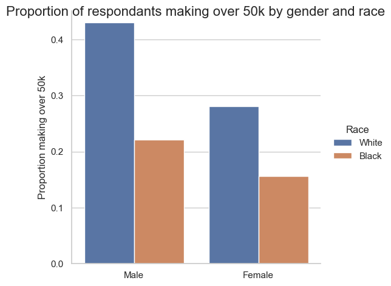
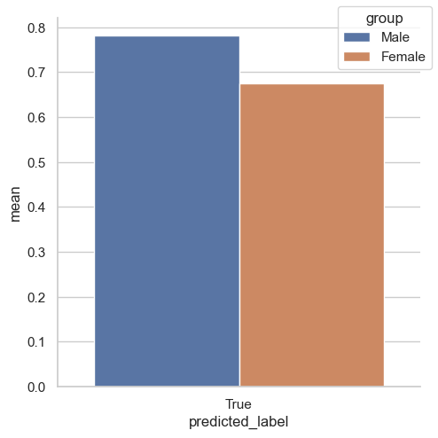
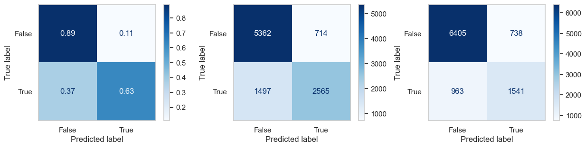
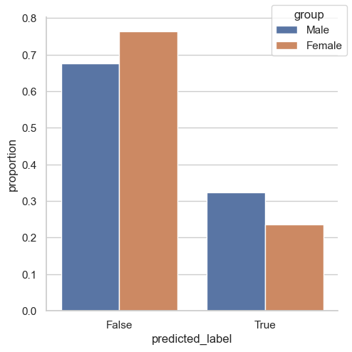

import numpy as np
import pandas as pd
import seaborn as sns
from matplotlib import pyplot as pltOverview
Goal
Creat a machine learning model that predicts if someone’s income is over $50K on the basis of sex. Then, we’ll perform a fairness audit to assess if our algorithm has a gender bias.
Approach
- Choose Problem
- Import appropriate dataset for training
- Chosse Features
- Basic Descriptives + visuals (if I’m not lazy)
- Model Training & Tuning
- Model Auditing
- Concluding Discussion
Useful Resources: - https://middlebury-csci-0451.github.io/CSCI-0451/lecture-notes/classification-in-practice.html
Choose Problem + Prepare Data For Modeling
Our Problem: Predict whether income is over $50K on the basis of demographics excluding sex, and audit for gender bias. The modeling is based on data from respondents in the state of Florida in 2018.
Import appropriate dataset for training
from folktables import ACSDataSource, ACSEmploymalet, BasicProblem, adult_filter
import numpy as np
STATE = "FL"
data_source = ACSDataSource(survey_year='2018',
horizon='1-Year',
survey='person')
acs_data = data_source.get_data(states=[STATE], download=True)
acs_data.head()| RT | SERIALNO | DIVISION | SPORDER | PUMA | REGION | ST | ADJINC | PWGTP | AGEP | ... | PWGTP71 | PWGTP72 | PWGTP73 | PWGTP74 | PWGTP75 | PWGTP76 | PWGTP77 | PWGTP78 | PWGTP79 | PWGTP80 | |
|---|---|---|---|---|---|---|---|---|---|---|---|---|---|---|---|---|---|---|---|---|---|
| 0 | P | 2018GQ0000011 | 5 | 1 | 12702 | 3 | 12 | 1013097 | 9 | 64 | ... | 8 | 2 | 15 | 9 | 7 | 8 | 0 | 14 | 8 | 15 |
| 1 | P | 2018GQ0000056 | 5 | 1 | 9907 | 3 | 12 | 1013097 | 53 | 95 | ... | 53 | 52 | 53 | 4 | 98 | 3 | 52 | 102 | 100 | 102 |
| 2 | P | 2018GQ0000085 | 5 | 1 | 7102 | 3 | 12 | 1013097 | 26 | 15 | ... | 22 | 4 | 28 | 45 | 50 | 51 | 23 | 23 | 27 | 3 |
| 3 | P | 2018GQ0000092 | 5 | 1 | 3302 | 3 | 12 | 1013097 | 80 | 20 | ... | 79 | 136 | 145 | 12 | 84 | 12 | 80 | 79 | 14 | 74 |
| 4 | P | 2018GQ0000104 | 5 | 1 | 10501 | 3 | 12 | 1013097 | 31 | 18 | ... | 5 | 4 | 5 | 31 | 29 | 5 | 5 | 31 | 4 | 3 |
5 rows × 286 columns
Choose Features
possible_features=['AGEP', 'COW', 'SCHL', 'MAR', 'OCCP', 'POBP', 'RELP', 'WKHP', 'RAC1P', 'SEX', 'PINCP'] #10 FEATURES FOR ACSIncome as listed in paper + PINCP as Target
acs_data[possible_features].head()| AGEP | COW | SCHL | MAR | OCCP | POBP | RELP | WKHP | RAC1P | SEX | PINCP | |
|---|---|---|---|---|---|---|---|---|---|---|---|
| 0 | 64 | NaN | 16.0 | 1 | NaN | 327 | 16 | NaN | 8 | 1 | 0.0 |
| 1 | 95 | NaN | 16.0 | 2 | NaN | 12 | 16 | NaN | 1 | 2 | 14500.0 |
| 2 | 15 | NaN | 12.0 | 5 | NaN | 12 | 16 | NaN | 2 | 1 | 0.0 |
| 3 | 20 | 1.0 | 16.0 | 5 | 5240.0 | 11 | 17 | 40.0 | 9 | 1 | 4900.0 |
| 4 | 18 | NaN | 16.0 | 5 | NaN | 40 | 17 | NaN | 2 | 1 | 0.0 |
#take out sex (feature we're auditing bias for) and total person’s income (target)
features_to_use = [f for f in possible_features if f not in ["PINCP", "SEX"]]IncomeProblem = BasicProblem(
features=features_to_use,
target='PINCP',
target_transform=lambda x: x > 50000, #0 if PINCP <=50k; #1 if PINCP >50k
group='SEX',
preprocess=adult_filter,
postprocess=lambda x: np.nan_to_num(x, -1),
)
features, label, group = IncomeProblem.df_to_numpy(acs_data)from sklearn.model_selection import train_test_split
X_train, X_test, y_train, y_test, group_train, group_test = train_test_split(
features, label, group, test_size=0.2, random_state=0)Basic Descriptives
Note: These basic descriptives are based only the training dataset.#create dataframe w/ training data for purposes of finding basic descriptives more easily
import pandas as pd
df = pd.DataFrame(X_train, columns = features_to_use)
df["group"] = group_train
df["label"] = y_traindf.head(5)| AGEP | COW | SCHL | MAR | OCCP | POBP | RELP | WKHP | RAC1P | group | label | |
|---|---|---|---|---|---|---|---|---|---|---|---|
| 0 | 64.0 | 1.0 | 21.0 | 1.0 | 9030.0 | 39.0 | 0.0 | 96.0 | 1.0 | 1 | True |
| 1 | 68.0 | 3.0 | 16.0 | 3.0 | 5400.0 | 12.0 | 0.0 | 40.0 | 2.0 | 2 | False |
| 2 | 28.0 | 4.0 | 20.0 | 5.0 | 5310.0 | 13.0 | 0.0 | 20.0 | 1.0 | 1 | False |
| 3 | 50.0 | 1.0 | 16.0 | 1.0 | 3603.0 | 12.0 | 0.0 | 40.0 | 2.0 | 2 | False |
| 4 | 26.0 | 2.0 | 20.0 | 5.0 | 5400.0 | 48.0 | 0.0 | 40.0 | 1.0 | 2 | False |
df.shape[0]79140There are 79140 people in this training dataset
df["label"].value_counts(normalize = True)False 0.668815
True 0.331185
Name: label, dtype: float64Approximately 33% of these people have a target label corresponding to 1 (true), meaning their income is greater than $50,000.
df["group"].value_counts()1 40684
2 38456
Name: group, dtype: int64There are 40,684 individuals in group 1 (male respondents) and 38,456 individuals in group 2 (female respondents)
over50k = df.query("label == True") #filter out respondents that make >50kover50k["group"].value_counts()1 16231
2 9979
Name: group, dtype: int64There are 16,231 male individuals who make more than \$50,000 in group 1 and 9,979 female individuals who make more than \$50,000 in group 2
#prevalence or base rates
print(16231/40684)
print(9979/38456)0.3989529053190443
0.259491366756813Approximately 39.9% of the male respondents (group 1) have an income over \$50,000 (target label equals 1) and appproximately 25.9% of the female respondents (group 2) have an income over \$50,000 (target label equals 1).
black_white = df.query("RAC1P == 1.0 or RAC1P == 2.0")grouped_over50k_black_white = black_white.groupby(["group", "RAC1P"], as_index=False)["label"].value_counts(normalize = True)grouped_over50k_black_white = grouped_over50k_black_white.query("label == True")grouped_over50k_black_white| group | RAC1P | label | proportion | |
|---|---|---|---|---|
| 1 | 1 | 1.0 | True | 0.430228 |
| 3 | 1 | 2.0 | True | 0.221417 |
| 5 | 2 | 1.0 | True | 0.281288 |
| 7 | 2 | 2.0 | True | 0.155718 |
import seaborn as sns
sns.set_theme(style="whitegrid")
g = sns.catplot(
data=grouped_over50k_black_white, kind="bar",
x="group", y="proportion", hue="RAC1P", legend_out = True)
g.fig.suptitle('Proportion of respondants making over 50k by gender and race', fontsize=16)
g.set_axis_labels("", "Proportion making over 50k")
g.set_xticklabels(['Male', 'Female'])
g._legend.set_title("Race")
new_labels = ['White', 'Black']
for t, l in zip(g._legend.texts, new_labels):
t.set_text(l)
Based on the responses from this survey, our basic descriptives tell us:
- Most people’s income is less than 50k.
- There are about as many female respondents as there is male respondents
- A larger quantity and proportion of male respondents have an income greater than 50k as opposed to the their female counterparts
- Intersectional Bias:
- Interestingly, the proportion of white females making over \$50k is higher than the proportion of black males making over \$50k. The proportion of black females making over \$50k is the lowest for all groupings. These findings are about our dataset before modeling, meaning they represent real-world trends as captured by the American Community Survey’s Public Use Microdata Sample (ACS PUMS), which are often informed by biases. At this macro level, the disparities amongst these groups that are observed may be attributed to gender and racial biases. Though at a micro level, some analyses may be done to try to disprove these claims.
- Do we only consider income inequality to be present if two people of different groups working the same jobs are paid differently? Or, does income inequality encompass who gets to work what types of jobs? More detailed data would be neccessary to wholly answer either of these questions. The disparities observed here may be sufficient to partially answer these questions, however, and may be indicative of the privilege white males hold that results in them usually working higher paying jobs or getting paid more for the same jobs that people in the other groups also do.
Useful Resources (for this section): - https://jakevdp.github.io/PythonDataScienceHandbook/03.00-introduction-to-pandas.html - https://levelup.gitconnected.com/20-pandas-functions-for-80-of-your-data-science-tasks-b610c8bfe63c
Model Training
The model we will use is the RandomForestClassifier. For more information on the specifics of this model refer to this previous blog post: Classifying Palmer Penguins
Tuning hyperparameters with cross-validation
from sklearn.pipeline import make_pipeline
from sklearn.preprocessing import StandardScaler
from sklearn.ensemble import RandomForestClassifier
from sklearn.model_selection import cross_val_score
#create model
model = make_pipeline(StandardScaler(), RandomForestClassifier(max_depth=10, random_state=0))
model.fit(X_train, y_train)
#cross-validation
model_scores = cross_val_score(model, X_train, y_train, cv=5)
print(model_scores)[0.80439727 0.80414455 0.80427091 0.80243872 0.80332322]The hyperparameter we tuned with the help of cross-validation for this RandomForestClassifier is the max_depth. Note: This could be done iteratively, but it is computationally expensive and takes a while to do. For our purposes, it’s arguably more effective to use trial and error to select the max_depth and settle on a value after we see the cross-validation scores plateauing (numbers in the 5-10 range usually work well, though the optimal selection is data dependent).
Model Auditing
Preliminaries
#gather predictions on test data
y_hat_tests = model.predict(X_test)
#functions for Positive Predictive Value, False Negative Rate, False Positive Rate
def bias_rates(cf, selection):
TN = cf[0,0] #Predict false, actual is false
FP = cf[0,1] #Predict true, actual is false
FN = cf[1,0] #Predict false, actual is true
TP = cf[1,1] #Predict true, actual is false
if selection == "PPV":
print (TP/(TP+FP))
elif selection == "FNR":
print (FN/(TP+FN))
elif selection == "FPR":
print (FP/(FP+TN))Overall Measures
The model’s overall accuracy in predicting whether someone’s income is over $50,000 is:
(y_hat_tests == y_test).mean()0.8022744503411675The model’s overall positive predictive value (PPV) is:
bias_rates(confusion_matrix(y_test, y_hat_tests), "PPV")0.7387549478229579The model’s overall false negative rate FNR is:
bias_rates(confusion_matrix(y_test, y_hat_tests), "FNR")0.37465732561681386The model’s overall false positive rate FPR is:
bias_rates(confusion_matrix(y_test, y_hat_tests), "FPR")0.10984189424313488By-Group Measures
For Male Individuals
The accuracy is:
(y_hat_tests == y_test)[group_test == 1].mean()0.7819096468731506The model’s positive predictive value (PPV) is:
bias_rates(confusion_matrix(y_test[group_test == 1], y_hat_tests[group_test == 1]), "PPV")0.7822506861848124The model’s false negative rate FNR is:
bias_rates(confusion_matrix(y_test[group_test == 1], y_hat_tests[group_test == 1]), "FNR")0.3685376661742984The model’s false positive rate FPR is:
bias_rates(confusion_matrix(y_test[group_test == 1], y_hat_tests[group_test == 1]), "FPR")0.1175115207373272For Female Individuals
The accuracy for female individuals is:
(y_hat_tests == y_test)[group_test == 2].mean()0.8236757541204519The model’s positive predictive value (PPV) is:
bias_rates(confusion_matrix(y_test[group_test == 2], y_hat_tests[group_test == 2]), "PPV")0.6761737604212373The model’s false negative rate FNR is:
bias_rates(confusion_matrix(y_test[group_test == 2], y_hat_tests[group_test == 2]), "FNR")0.3845846645367412The model’s false positive rate FPR is:
bias_rates(confusion_matrix(y_test[group_test == 2], y_hat_tests[group_test == 2]), "FPR")0.10331793364132717For our binary sex-based income classification task, our overall measures tell us:
- The model has a slightly higher accuracy for females than for males (about a 4% difference)
- Accuracy is the # of correct predictions / # of total predictions
- Basically, the likelihood that the model’s prediction matches the actual label.
- The model’s PPV is significantly higher for males than for females (about a 10 % difference), meaning that when the model predicts that males make >\$50k, it is right 10% more often than when it predicts that females make >\$50k.
- PPV is the likelihood that for a given positive prediction, the corresponding actual label that was also positive.
- The model has very similar FNR and FPR rates for both groups, meaning that the rate at which the model fail to identify individuals making >\$50k and <\$50k is almost the same for both groups.
- FNR is the the likelihood that for a given actual label that is a positive, the model incorectly predicts a negative label. Basically, failure to identify positive cases.
- FPR is the the likelihood that for a given actual label that is a negative, the model incorectly predicts a positive label. Basically, failure to identify negative cases.
Note: “Positive” and “negative” are not indicative good or bad. In this context, “positive” means making >$50k, “negative” means making <\$50k.
Bias Measures
Calibration
As defined by Chouldechova in this paper, “a score S = S(x) is said to be well-calibrated if it reflects the same likelihood of recidivism irrespective of the individuals’ group membership.”
In our context, when we are doing binary classification for sex-based income, the calibration takes on the form of the PPV. Namely, our model would be well-calibrated if the fraction of predicted individuals making >\$50k who actually make >\$50k is the same across groups.
df2 = pd.DataFrame(X_test, columns = features_to_use) df2["group"] = group_test
df2["label"] = y_test
df2["predicted_label"] = y_hat_testsdf2_calibration = df2.query("predicted_label == True")df2_calibration = df2_calibration.groupby(["group", "predicted_label"])["label"].mean().reset_index(name = "mean")sns.set_theme(style="whitegrid")
p = sns.catplot(data = df2_calibration, kind = "bar", x = "predicted_label", y = "mean", hue = "group", legend_out = False)
new_labels = ['Male', 'Female']
for t, l in zip(p._legend.texts, new_labels):
t.set_text(l)
sns.move_legend(p, "upper right")
Of those who were predicted to make >\$50k, more males actually make >\$50k.
Error Rate Balance
A prediction satisfies error rate balance if the FPR and FNR are equal across groups.
fig, axarr = plt.subplots(1, 3, figsize=(15,3.2), sharex = False, sharey = False)
#overall
cm1 = confusion_matrix(y_test, y_hat_tests, labels=model.classes_, normalize = "true")
disp1 = ConfusionMatrixDisplay(confusion_matrix=cm1,
display_labels=model.classes_)
#male
cm2 = confusion_matrix(y_test[group_test == 1], y_hat_tests[group_test == 1], labels=model.classes_)
disp2 = ConfusionMatrixDisplay(confusion_matrix=cm2,
display_labels=model.classes_)
#female
cm3 = confusion_matrix(y_test[group_test == 2], y_hat_tests[group_test == 2], labels=model.classes_)
disp3 = ConfusionMatrixDisplay(confusion_matrix=cm3,
display_labels=model.classes_)
disp1.plot(ax=axarr[0], cmap = plt.cm.Blues)
axarr[0].grid(visible=None)
disp2.plot(ax=axarr[1], cmap = plt.cm.Blues)
axarr[1].grid(visible=None)
disp3.plot(ax=axarr[2], cmap = plt.cm.Blues)
axarr[2].grid(visible=None)

As observed in the overall measures section, the FPR and FNR are nearly the same across groups.
Statistical Parity
A prediction satisfies statistical parity if the likelihood of getting a certain prediction is the same across groups.
Very subjective picking what the worse classification is. In hands of gov. for taxes, maybe it’s worse to be predicted high, cuz you’ll pay more taxes and good for lower cuz you’ll get more benefits. Bad for people trying to charge you (loans maybe idk), cuz they’ll predict you have more money and charge you more.
df2_stat_parity_v = df2.groupby(["group"], as_index=False)["predicted_label"].value_counts(normalize = True)df2_stat_parity_v| group | predicted_label | proportion | |
|---|---|---|---|
| 0 | 1 | False | 0.676563 |
| 1 | 1 | True | 0.323437 |
| 2 | 2 | False | 0.763761 |
| 3 | 2 | True | 0.236239 |
sns.set_theme(style="whitegrid")
p = sns.catplot(data = df2_stat_parity_v, kind = "bar", x = "predicted_label", y = "proportion", hue = "group", legend_out = False)
new_labels = ['Male', 'Female']
for t, l in zip(p._legend.texts, new_labels):
t.set_text(l)
sns.move_legend(p, "upper right")
The model is more likely to predict that males make >50k and that females make <\$50k.
Concluding Discussion
What groups of people could stand to benefit from a system that is able to predict income levels?
Many groups could benefit immalesely from a ML model that accurately predicts someone’s income being above a certain threshold. Companies that loan money like banks and car dealerships could use this for expedited decisions on loan eligibility, amounts, and interest rates. By this same logic, this model could also help make social welfare programs more efficient. For individuals that change jobs or achieve a higher education level (amongst other features), this model may be helpful in predicting their new income.
Based on your bias audit, do you feel that your model displays problematic bias?
PPV, FPR, FNR Relationship:
\[\begin{equation} FPR = \frac{p}{1-p}\frac{1-PPV}{PPV}(1-FNR) \end{equation}\]
As can be deduced from this equation, if the prevalence (base rates) is different across groups, it is mathematically impossible for the PPV to be equal and error rates to be balanced across groups.
Our model is not well-calibrated (unequal PPVs for males and females), but it does satisfy error-rate balance thanks to its PPV disparity.
For this , calibration is PPV. So higher PPV for male means that the likelihood that when we predict positively, the actual is positive is higher for male. From the female perspective, having a lower PPV means that there is a decreased likelihood that when we predict positively, the actual is positive for females.
Thus, more females will get “undeserving” positive predictions (false positives: predict positive, actual is negative).
FPR is unaffected though, because of the two group’s differing prevalence (base rates). Since there are a lot more true negatives for females, FPR balances out. FPR = FP / FP + TN
In spite of our balanced error-rate, our model is still more likely to predict males make >50k (statistical parity discrepancy). Depending on our model’s use case, this may be a form of allocative bias as it could have a disparate impact on either group.
Based on your bias audit, what could be the impact of deploying your model for large-scale prediction in commercial or governmaletal settings?
In commercial settings if our model is used for loan-related tasks, it will probably be for the benefit of the individual that the model predicts that they make >50k as it will help them get approved. In this scenario a disproportionate false negative rate is bad because it will mean that a certain group is less likely to get favorable loans because the model failed to identify positive cases at a higher rate for this group.
In gov. settings if our model is used for distribution of welfare tasks, it will be for the benefit of the individual that the model predicts that they make <50k. In this scenario a disproportionate false positive rate is bad because it will mean that a certain group is less likely to get favorable loans because the model failed to identify negative cases at a higher rate for this group.
Since our error rates are balanced, the model will not lead to disparate impact in either scenario, so it could be deployed for both simultaneously.
Nonetheless, becasuse of the statistical parity violation, a higher proportion of males are more likely to attain favorable loans, while a higher proportion of females are more likely to receive favorable welfare benefits.
Fairness intervention tactics to balance out the statistical parity violation may be employed if deemed fit.
Beyond bias, are there other potential problems associated with deploying your model that make you uncomfortable? How would you propose addressing some of these problems?
As specified in the paper that developed the ACS Income prediction task, there are glaring limitations to deploying this model for more general use:
The data is U.S centric (page 8). To deploy this model for other countries, it would be important to ensure that demographic tends regarding sex-based income are similar in those countries. Preferably, data from those countries would be collected and use to train a different model that does the same prediction task.
“Training and testing on different states leads to unpredictable results” (page 10). To address this, we should stick to training and testing on the same state.
“Fairness criteria are more stable over time than predictive accuracy” (page 10). To address this, we could add econonomic metrics like inflation to make time-sensitive modeling more accurate. The consistency in fairness criteria over time could likely be attributed to base rates remaining stagnant, which may be indiciative of our society’s lack of social progress to close the gender pay gap.